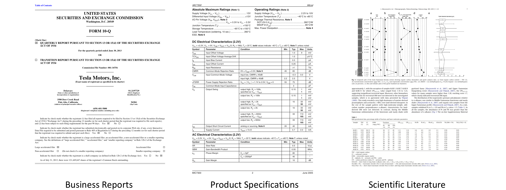
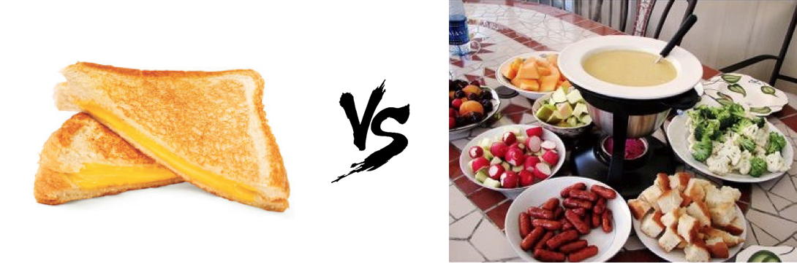
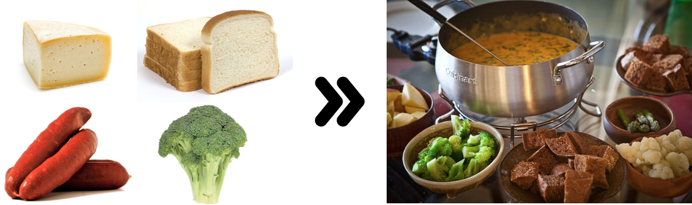
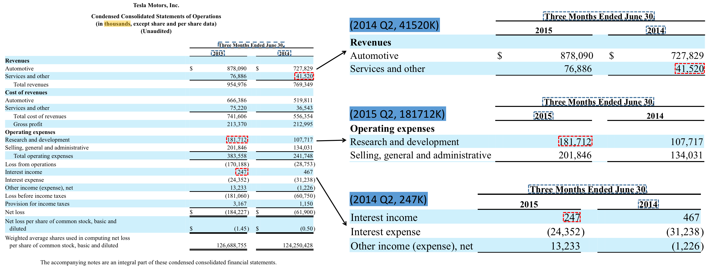
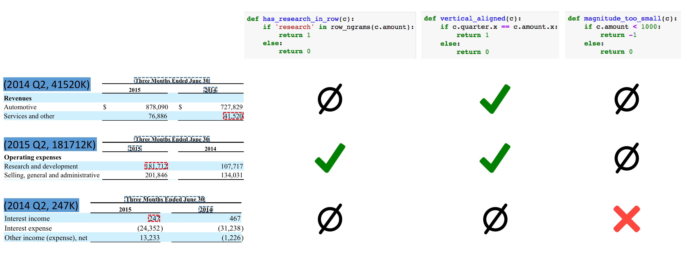
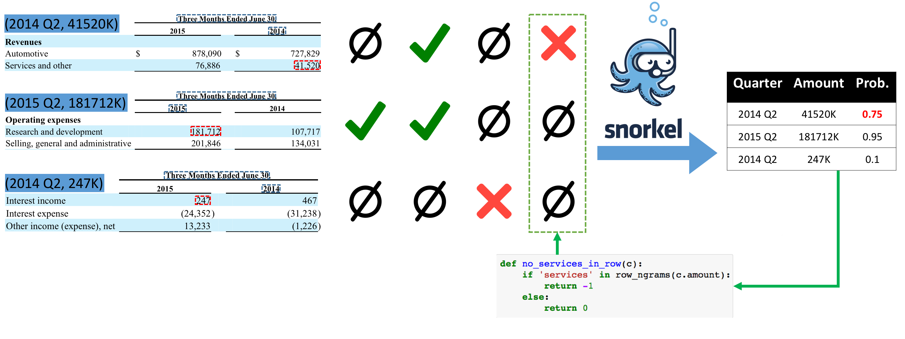

Fonduer: Knowledge Base Construction from
Richly Formatted Data
Post by Sen Wu, Luke Hsiao, and Chris Ré
And referencing work by many other members of Hazy Research
How much money does Tesla burn on research and development each quarter? What are the epicenters and magnitudes of all the earthquakes in California? The answers to these types of questions can be tedious and difficult to extract from openly available documents. Why? These answers are often not found in unstructured text. Instead, they are often locked away in troves of richly formatted data, where information is conveyed via combinations of textual, structural, tabular, and visual expressions, as seen in webpages, business reports, product specifications, and scientific literature. We walk through a case study on Tesla's spending below.

We describe Fonduer, the first knowledge base construction framework for richly formatted information extraction. Using Fonduer, our users have achieve high quality knowledge base construction from richly formatted data in a wide variety of domains.
As shown above, these documents contain tabular information, figures, text, and other rich formatting that is designed for human readers. Richly formatted data is particularly challenging for computers to understand due to three major challenges: (1) document-level context, (2) multimodality, and (3) data variety. Previous work has applied both heuristic and machine learning techniques on richly formatted data, but none of these previous systems fully address the challenges associated with this task in a user-friendly framework. Let's explore these challenges in the context of delicious food:
Document-Level Context: Information extraction from unstructured text is a lot like eating grilled cheese sandwiches. Both sentences and sandwiches are small, self-contained packages. In contrast, richly formatted information is more like fondue, where a delectable assortment of ingredients can be combined to form hundreds of unique, flavorful bites. When extracting information from richly formatted data, mentions in a relation can span entire documents, and considering document-level context results in far more interesting combinations than considering sentences alone.

Multimodality: Fondue is much less appealing if you imagine eating isolated ingredients. It's the process of eating brilliantly flavorful fusions of these ingredients together that makes fondue special. The same is true for richly formatted data. Unlike unstructured text, richly formatted data relies on semantics that are expressed through multiple modalities: the textual contents, structure of a document, tabular organization of information, and even the visual presentation of fonts, alignments, and figures. Each modality alone is not particularly interesting, but together, they form a rich meal of information that requires new models to fully appreciate.

Data Variety: There aren't many variations when it comes to grilled cheese, you can change the bread, you can change the cheese, but after that, it ceases to be grilled cheese. Fondue, on the other hand, comes in immense varieties such as cheese, chocolate, and meat, each with a limitless variety of dipping ingredients. Similarly, unstructured text is, well, unstructured text. Richly formatted data, however, comes in a variety of formats from a variety of domains. Even within a single domain, there can be immensely different ways to format and present information.
Fonduer automatically encodes richly formatted data into its unified data model, which preserves semantics from different modalities, and uses an iterative, human-in-the-loop paradigm that allows users to convert domain expertise into weak supervision signals that guide the knowledge base construction process.
To account for the variability of richly formatted data, Fonduer automatically encodes documents of heterogeneous formats into its unified data model—the key ingredient that preserves structural and semantic information across different modalities of the data. This unified data model provides the formalism that enables Fonduer to use a machine learning approach to construct a knowledge base with facts from the input documents. Fonduer, like other machine learning systems, operates on (1) candidates, which are potential entries in a target knowledge base; (2) features, which describe candidates and serve as signals for a classifier to distinguish between true and false candidates; and (3) training data, which is ground truth information on a subset of candidates that is used to train the classifier.
Fonduer uses a human-in-the-loop paradigm for training machine learning systems called data programming. Data programming softens the burden of traditional supervision by only asking users to provide lightweight functions that programmatically assign (potentially noisy) labels to the input data. By utilizing its unified data model, and applying data programming, Fonduer is the first knowledge base construction framework for richly formatted data that allows users to solely focus on iteratively converting domain expertise into valuable programmatic sources of weak supervision which are then used to train machine learning models.
When Elon Musk described his master plan for Tesla, it went something like this: (1) build a sports car, (2) invest the profits to build an affordable car, and (3) repeat to build an even more affordable car. Tesla has been built around the idea of investing cash back into R&D to drive down the costs of their new products. In fact, this emphasis in R&D stands out from other car makers in interesting ways. In our toy example, we show how you could use Fonduer to build a knowledge base of Telsa's real quarterly R&D expenses. Companies publish their quarterly financial information in a variety of ways, through press conferences, reports, summary tables, or official government forms. The amount of money that Tesla spends on R&D can be found in 10-Q forms that are published for their investors. Using Fonduer, we can construct a knowledge base of the amount of money that is spent on R&D each quarter by collecting a corpus of these 10-Q PDFs/webpages and performing KBC using Fonduer. Specifically, we show the process of extracting a knowledge base of each quarter's R&D spending as (quarter, amount) tuples.We use a toy example to explore how Fonduer extracts information from richly formatted data. We ran Fonduer on real relation extraction tasks in many domains and report results in the paper.
Unlike unstructured text, candidates are drawn from different areas of a document, and require multimodal features to provide sufficient evidence on whether they are true or false.

In 10-Q forms, expenses are published in tabular form as shown in above. However, notice that all the challenges and characteristics of richly formatted data come into play. Candidates can be found from all over this example page. In addition, interpreting candidates rely on a variety of multimodal features. For example, in the table above, the words that are aligned with each numerical value are particularly important to what each value represents, as is realizing that all values are in thousands as the caption subtly states.
Fonduer allows users to define how candidates are matched and generated from anywhere on a document, and allows users to define functions to prune excess candidates to control the combinatorial explosion of possible candidates. In addition, each candidate is automatically featurized using a baseline set of multimodal features that include textual features (e.g. traditional NLP tags), structural features (e.g. HTML tag attributes or font styles), tabular features (e.g. row and column numbers and header information), and visual features (e.g. position on a page and visual alignments).
With richly formatted data, traditional labeled training data is often not available. Instead, properly training machine learning models requires supervision from a variety of multimodal sources to identify patterns across modalities, which are sparse and hidden in non-textual signals.

In richly formatted data, useful patterns for classifying whether or not a candidate is true or false are more sparse than in unstructured text. Furthermore, they are hidden in non-textual signals, which motivates the need to exploit overlap and repetition in a variety of patterns over multiple modalities. In the 10-Q form, we see that information from many modalities can provide useful signals in determining whether a candidate is true or false. For example, tabular alignment with keywords like "research" may indicate a true relation, as does being visually aligned with the quarter's end date. Textual information, such as the magnitude of the numerical value itself, can also be a good indication of a candidate's classification—investors who know Tesla would expect over a million dollars to be spent on R&D. Fonduer's unified data model allows users to directly express these types of intuitive rules called labeling functions.
In Fonduer, labeling functions take the form of simple Python functions (as shown in the figure above) that can label candidates based on multimodal characteristics. It is expected that these labeling functions may conflict or overlap. In our example, we see that the positive labeling functions for being vertically aligned with the date and having the word "research" in the same row overlap. Data programming relies on a generative probabilistic model to estimate the accuracy of each labeling function by reasoning about the conflicts and overlap between them. Fonduer provides the required candidates, features, and labels as input to Snorkel, a data programming engine developed by our lab, which assigns a marginal probability for each candidate.
The Fonduer programming model allows users to iteratively improve the quality of their labeling functions through error analysis, without executing the full pipeline as in previous techniques like incremental knowledge base construction.

Traditionally, iterative knowledge base construction involves time consuming feature engineering, tuning learning algorithms, or even acquiring additional training data. However, under Fonduer's programming model, we simplify and restrict these adjustments to changing the set of labeling functions, which lets users incorporate domain knowledge in a templated, generic way at the data level, instead of the feature or system level. Using the three labeling functions shown in the previous step, a user would notice that the amount spent on R&D in 2014 Q2 is classified with a high probability of being true. Inspecting this candidate shows that it is actually the cost of services for the quarter. A user can simply add another labeling function to negatively label candidates that have numerical values aligned with the word "services", which targets a new set of signals, and rerun classification.
Fonduer allows users to perform iterations of KBC quality improvement by adjusting their set of labeling functions according to the results of error analysis, while avoiding rerunning candidate generation and multimodal featurization. Fonduer provides two resources for users to perform error analysis: (1) labeling function metrics such as conflict, empirical accuracy, coverage, and overlap; and (2) an interface for inspecting the resulting candidates to understand categorical errors. Our users have found that less than 20 rapid iterations on labeling functions allows them to achieve sufficiently high quality for their applications.
Some other things we've pushed into our queue:
We will continue to work with our collaborators to build high quality knowledge bases in a variety of domains.
We are actively collaborating with experts from other domains to examine how Fonduer can speed up the KBC process.
We are excited to work on extracting other modalities of richly formatted data, such as images, videos, etc.